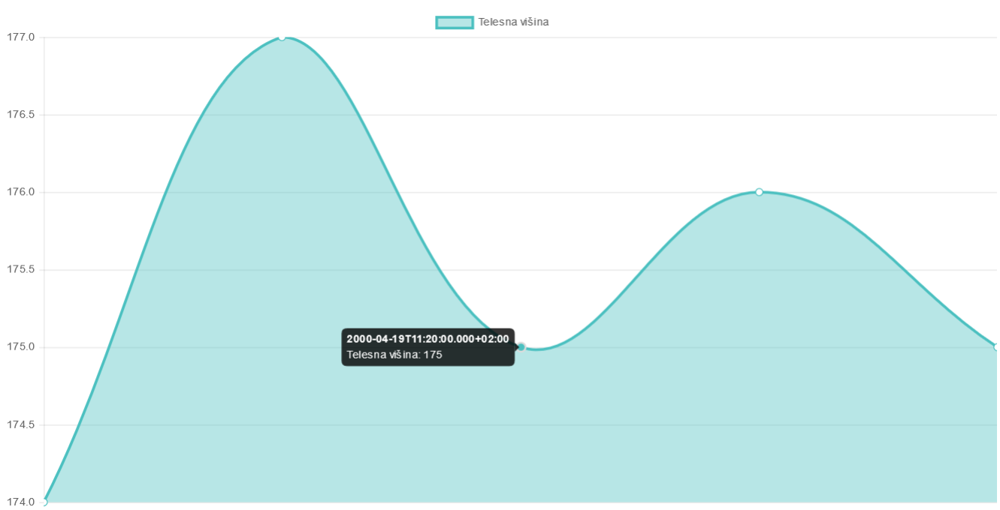
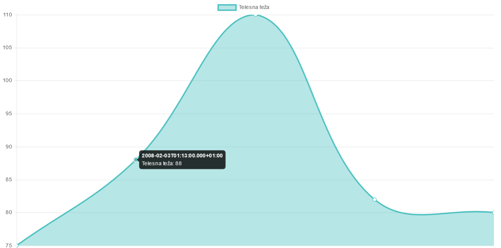

Opis ideje, ki jo aplikacija podpira
Aplikacija je namenjena medicinskemu osebju, in pacientom, da pregledujejo svoje vitalne telesne znake.
Primer uporabe bi bil pregled pacienta v zdravstveni ordinaciji in beleženje njegovih meritev v EHRscape.
Če pacient dobi zdravila na recept si lahko na spletni strani poišče najbližjo lekarno.
Ciljna publika: Medicinsko osebje, ki prisega na preprost vmesnik in vsi ljudje, ki bi radi hranili svoje vitalne telesne znake v zaupanju vrednem okolju.
Uporabljeni zunanji viri podatkov
V nalogo sem vključil Google maps in Google maps geolocation API, oba sem uporabljal preko njunih API-jev.
Google maps API sem uporabil za prikaz zemljevida in lekarn v radiju 10 kilometrov.
Google maps location API pa sem uporabil za pridobivanje geo. lokacije ob kliknu na gumb "Geo lokacija" in postavitev zemljevida na to lokacijo.
Master/detail načrtovalski vzorec
Master/detail sem naredil pri vizualizaciji podatkov v graf, kjer se ob prehodu z miško na meritev na grafu pojavi oblaček z podatki o meritvi in času opravljene meritve.


Uporabljena tehnika za vizualizacijo podatkov
Za vizualizacijo podatkov sem uporabil Chart.js, ker se mi je zdel vizualno lep in preprost za uporabo.
Uporabil sem Chart.js line graf.